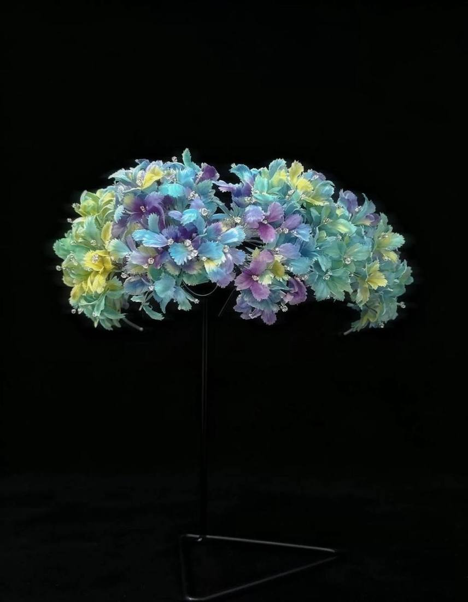

Online Museum · 线上博物馆
万物璀璨
litost
作品与设计理念的档案馆。绒花、织锦、草木染、漆钿，一次看尽；点开哪一类，就逛哪一类，点开哪一件，就读哪一件的来处。

Selected Works
从各个门类里挑出的几件，先看个大概。
Prelude · 四大门类
点开哪一类，就看哪一类。
想收藏、想按自己的尺寸复刻，或者只是想聊聊某一件作品，请到闲鱼找光盐居。所有沟通与交易都在闲鱼内完成，请勿站外交易。
万古长空 一朝风月